수산물품질관리사-1차 (2022-06-04 기출문제)
1과목: 수산물품질관리 관련법령
1. 농수산물 품질관리법상 '물류표준화' 용어의 정의이다. ( )에 들어갈 내용을 순서대로 옳게 나열한 것은?
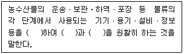
- 안정화, 호환성, 편의성
- 규격화, 호환성, 연계성
- 규격화, 연계성, 편의성
- 안정화, 정형성, 연계성
(정답률: 알수없음)

2. 농수산물 품질관리법상 농수산물품질관리심의회 설치에 관한 내용으로 옳지 않은 것은?
- 심의회 위원구성은 위원장 및 부위원장 각 1명을 제외한 60명 이내의 위원으로 한다.
- 위원장은 위원 중에서 호선(互選)하고 부위원장은 위원장이 위원 중에서 지명하는 사람으로 한다.
- 해양수산부 소속 공무원 중 해양수산부장관이 지명한 사람은 심의회 위원이 될 수 있다.
- 수산물의 소비 분야에 전문적인 지식이 풍부한 사람으로서 해양수산부장관이 위촉한 위원의 임기는 3년으로 한다.
(정답률: 알수없음)
3. 농수산물 품질관리법상 ( )에 들어갈 내용을 순서대로 옳게 나열한 것은?
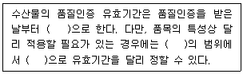
- 1년, 2년, 대통령령
- 2년, 3년, 총리령
- 2년, 4년, 해양수산부령
- 3년, 5년, 해양수산부령
(정답률: 알수없음)
4. 농수산물 품질관리법령상 지리적표시의 등록거절 사유가 아닌 것은?
- 해당 품목의 우수성이 국내에서는 널리 알려져 있으나 국외에서는 널리 알려지지 아니한 경우
- 해당 품목이 지리적표시 대상지역에서 생산된 역사가 깊지 않은 경우
- 해당 품목이 수산물인 경우에는 지리적표시 대상지역에서만 생산된 것이 아닌 경우
- 해당 품목의 명성ㆍ품질이 본질적으로 특정지역의 생산환경적 요인과 인적 요인 모두에 기인하지 아니한 경우
(정답률: 알수없음)
5. 농수산물 품질관리법령상 수산물 및 수산가공품에 대한 관능검사의 대상이 아닌것은?
- 검사신청인이 위생증명서를 요구하는 수산물ㆍ수산가공품(비식용수산ㆍ수산가공품은 제외)
- 검사신청인이 분석증명서를 요구하는 수산물
- 국내에서 소비하는 수산물
- 정부에서 수매하는 수산물ㆍ수산가공품
(정답률: 알수없음)
6. 농수산물 품질관리법령상 수산물검사관의 자격 취소 및 정지에 관한 내용으로 옳은 것은? (단, 경감은 고려하지 않음)
- 위반행위가 둘 이상인 경우에는 그 중 무거운 처분기준을 적용하며, 둘 이상의 처분 기준이 동일한 자격정지인 경우에는 가중처분할 수 없다.
- 위반행위의 횟수에 따른 행정처분의 기준은 최근 1년간 같은 위반행위로 행정처분을 받은 경우에 적용한다.
- 다른 사람에게 1회 그 자격증을 대여하여 검사를 한 경우 “자격취소”에 해당한다.
- 고의적인 위격검사를 1회 위반한 경우 “자격정지 6개월”에 해당한다.
(정답률: 알수없음)
7. 농수산물 품질관리법령상 수산물품질관리사 제도에 관한 내용으로 옳지 않은 것은?
- 수산물품질관리사는 수산물의 생산 및 수확 후 품질관리기술 지도를 수행할 수 있다.
- 해양수산부장관은 수산물품질관리사의 자격을 부정한 방법으로 취득한 사람의 자격을 취소하여야 한다.
- 해양수산부장관은 수산물품질관리사 자격시험의 시행일 1년 전까지 수산물품질관리사 자격시험의 실시계획을 세워야 한다.
- 해양수산부장관은 수산물품질관리사 자격시험의 최종 합격자 명단을 제2차시험 시행 후 40일 이내에 공고하여야 한다.
(정답률: 알수없음)
8. 농수산물 품질관리법령상 시ㆍ도지사가 지정해역을 지정받으려는 경우 국립수산물품질관리원장에게 지정을 요청해야 한다. 이 때 갖추어야 할 서류가 아닌 것은?
- 지정받으려는 해역 및 그 부근의 도면
- 지정해역 지정의 타당성에 대한 환경부장관의 의견서
- 지정받으려는 해역의 위생조사 결과서
- 지정받으려는 해역의 오염 방지 및 수질 보존을 위한 지정해역 위생관리계획서
(정답률: 알수없음)
9. 농수산물 품질관리법령상 유전자변형농수산물의 표시대상품목을 고시하는 자는?
- 해양수산부장관
- 식품의약품안전처장
- 국립수산과학원장
- 국립수산물품질관리원장
(정답률: 알수없음)
10. 농수산물 품질관리법령상 지정해역의 지정해제에 관한 내용이다. ( )에 들어갈 내용은?
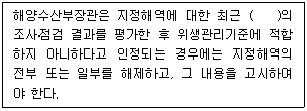
- 1년간
- 1년 6개월간
- 2년간
- 2년 6개월간
(정답률: 알수없음)
11. 농수산물 유통 및 가격안정에 관한 법률상 중도매인의 영업에 해당하지 않는 것은?
- 농수산물도매시장에 상장된 수산물을 매수하여 도매하는 영업
- 농수산물도매시장에 상장된 수산물을 위탁받아 도매하는 영업
- 농수산물도매시장의 개설자로부터 허가를 받은 비상장 수산물을 위탁받아 도매하는 영업
- 농수산물도매시장의 개설자로부터 허가를 받은 비상장 수산물의 매매를 중개하는 영업
(정답률: 알수없음)
12. 농수산물 유통 및 가격안정에 관한 법률상 해양수산부령으로 정하는 주요 수산물의 가격 예시에 관한 내용으로 옳지 않은 것은?
- 해양수산부장관이 주요 수산물의 수급조절과 가격안정을 위하여 필요하다고 인정할 때 가격 예시를 할 수 있다.
- 수산물의 종자입식 시기 이후에 하한가격을 예시하여야 한다.
- 가격 예시는 생산자를 보호하기 위함이다.
- 예시가격을 결정할 때에는 미리 기획재정부장관과 협의하여야 한다.
(정답률: 알수없음)
13. 농수산물 유통 및 가격안정에 관한 법률상 도매시장에서 경매사의 업무에 해당하지않는 것은?
- 도매시장법인이 상장한 수산물에 대한 경매 우선순위의 결정
- 도매시장법인이 상장한 수산물에 대한 가격평가
- 도매시장법인이 상장한 수산물에 대한 경락자의 결정
- 도매시장법인이 상장한 수산물에 대한 경락 수수료 징수
(정답률: 알수없음)
14. 농수산물 유통 및 가격안정에 관한 법령상 민영도매시장을 개설하려는 자가 개설허가신청서에 첨부하여야 할 서류로써 명시되어 있는 것을 모두 고른 것은?
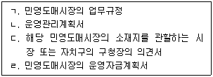
- ㄱ, ㄴ, ㄷ
- ㄱ, ㄴ, ㄹ
- ㄱ, ㄷ, ㄹ
- ㄴ, ㄷ, ㄹ
(정답률: 알수없음)
15. 농수산물 유통 및 가격안정에 관한 법령상 농수산물 전자거래소의 거래수수료 및 결재방법에 관한 설명으로 옳은 것은?
- 거래수수료는 거래액의 1천분의 20을 상한으로 한다.
- 수수료는 금전 또는 현물로 징수한다.
- 판매자의 판매수수료는 사용료에 포함하므로 별도로 징수하지 않는다.
- 거래계약이 체결된 경우 한국농수산식품유통공사가 구매자를 대신하여 그 거래대금을 판매자에게 직접 결제할 수 있다.
(정답률: 알수없음)
16. 농수산물의 원산지 표시 등에 관한 법률상 수산물 및 그 가공품의 원산지 표시 등에 관한 사항을 심의하는 기관은?
- 농수산물품질관리심의회
- 한국농수산식품유통공사
- 국립수산물품질관리원
- 한국소비자원
(정답률: 알수없음)
17. 농수산물의 원산지 표시 등에 관한 법률상 원산지 표시 등의 적정성을 확인하기 위해 관계 공무원이 조사할 경우에 관한 내용으로 옳지 않은 것은?
- 관계 공무원이 확인ㆍ조사를 위해 보관창고 출입 시 수색영장을 갖추어야 한다.
- 관계 공무원이 조사할 때 원산지 표시대상 수산물을 판매하는 자는 정당한 사유 없이 이를 거부ㆍ방해하거나 기피하여서는 아니 된다.
- 관계 공무원은 출입 시 성명, 출입시간, 출입목적 등이 표시된 문서를 관계인에게 교부하여야 한다.
- 관계 공무원은 조사 시 필요한 경우 해당 영업과 관련된 장부나 서류를 열람할 수 있다.
(정답률: 알수없음)
18. 농수산물의 원산지 표시 등에 관한 법령상 과징금의 부과ㆍ징수에 관한 내용으로 옳지 않은 것은?
- 과징금을 부과하려면 그 위반행위의 종류와 과징금의 금액 등을 명시하여 과징금을 낼 것을 과징금 부과대상자에게 서면으로 알려야 한다.
- 원산지를 위장하여 판매하는 행위를 2년 이내에 2회 이상 위반한 자에게 그 위반금액의 5배 이하에 해당하는 금액을 과징금으로 부과ㆍ징수할 수 있다.
- 과징금을 한꺼번에 내면 자금사정에 현저한 어려움이 예상되는 경우에도 과징금의 납부기한 연장은 허용되지 않는다.
- 과징금을 내야 하는 자가 납부기한까지 내지 아니하면 국세 또는 지방세 체납처분의 예에 따라 징수한다.
(정답률: 알수없음)
19. 농수산물의 원산지 표시 등에 관한 법령상 대통령령으로 정하는 식품접객업(일반음식점)에서 수산물을 조리하여 판매하는 경우 원산지의 표시대상이 아닌 것은?
- 넙치
- 뱀장어
- 대구
- 주꾸미
(정답률: 알수없음)
20. 친환경농어업 육성 및 유기식품 등의 관리ㆍ지원에 관한 법령상 유기수산물 양식장에 양식생물(수산동물)이 있는 경우, 새우 양식의 pH 조절에 한정하여 사용 가능한 물질은?
- 알코올
- 부식산
- 백운석
- 요오드포
(정답률: 알수없음)
21. 친환경농어업 육성 및 유기식품 등의 관리ㆍ지원에 관한 법령상 친환경어업 육성 계획에 포함되어야 하는 사항으로 명시되지 않은 것은?
- 어장의 수질 등 어업 환경 관리 방안
- 수질환경기준 설정에 관한 사항
- 무항생제수산물의 수출ㆍ수입에 관한 사항
- 환경친화형 어업 자재의 개발 및 보급과 어업 폐자재의 활용 방안
(정답률: 알수없음)
22. 친환경농어업 육성 및 유기식품 등의 관리ㆍ지원에 관한 법령상 유기식품 인증취소 사유가 아닌 것은?
- 잔류물질이 검출되어 인증기준에 맞지 아니한 경우
- 거짓이나 그 밖의 부정한 방법으로 인증을 받은 경우
- 전업(轉業), 폐업 등의 사유로 인증품을 생산하기 어렵다고 인정하는 경우
- 인증품의 판매금지 명령을 정당한 사유 없이 따르지 아니한 경우
(정답률: 알수없음)
23. 수산물 유통의 관리 및 지원에 관한 법률 제1조(목적)에 관한 내용이다. ( )에 들어갈 내용을 순서대로 옳게 나열한 것은?
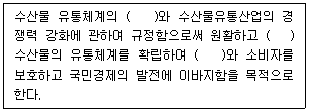
- 효율화, 위생적인, 판매자
- 투명화, 위생적인, 생산자
- 효율화, 안전한, 생산자
- 투명화, 안전한, 판매자
(정답률: 알수없음)
24. 수산물 유통의 관리 및 지원에 관한 법령상 위판장 외의 장소에서 매매 또는 거래할 수 없는 수산물은?
- 종자용 홍어
- 양식용 문어
- 종자용을 제외한 뱀장어
- 종자용을 제외한 미꾸라지
(정답률: 알수없음)
25. 수산물 유통의 관리 및 지원에 관한 법령상 수산물 규격품임을 표시하려고 할경우 “규격품”이라는 문구와 함께 표시하여야 할 사항이 아닌 것은?
- 산지
- 등급
- 생산자단체의 명칭 및 전화번호
- 생산일자와 유통기한
(정답률: 알수없음)
2과목: 수산물유통론
26. 수산물 유통의 거리와 기능 관계를 연결한 것 중 옳지 않은 것은?
- 장소 거리 - 운송 기능
- 시간 거리 - 보관 기능
- 품질 거리 - 선별 기능
- 인식 거리 - 거래 기능
(정답률: 알수없음)
27. 수산물 거래관행에 관한 설명으로 옳지 않은 것은?
- 위탁판매제란 수협위판장에 수산물을 판매ㆍ위탁하는 제도이다.
- 산지위판장에서는 주로 경매ㆍ입찰제가 실시된다.
- 연근해수산물은 수협위판장을 경유하여 판매해야만 한다.
- 원양선사는 대량으로 생산된 원양어획물 판매를 위해 입찰제를 실시하고 있다.
(정답률: 알수없음)
28. 수산물 유통경로가 다양하고 다단계로 이루어지는 이유로 옳지 않은 것은?
- 수산물 생산이 계절적으로 행해진다.
- 조업어장이 해역별로 집중되어 있다.
- 영세한 어업인이 전국적으로 분포되어 있다.
- 수산물은 부패하기 쉽다.
(정답률: 알수없음)
29. 수산물 유통 활동 중 물적유통 활동에 관한 설명으로 옳지 않은 것은?
- 수산물의 보관 및 판매를 위한 포장 활동
- 수산물의 양륙 및 상ㆍ하차 등 물류 활동
- 수산물 소유권 이전을 위한 거래 활동
- 산지와 소비지를 연결시켜 주는 운송 활동
(정답률: 알수없음)
30. 수산물 산지위판장에서 발생하는 유통비용에 관한 설명으로 옳지 않은 것은?
- 위판장에 접안한 어선에서 생산물을 양륙ㆍ반입할 때 양륙비가 발생한다.
- 양륙한 수산물의 경매를 위해 위판장에 진열하는 배열비가 발생한다.
- 수산물을 입상하여 경매할 경우 추가로 작업비가 발생한다.
- 모든 수산물 산지위판장에서는 동일한 위판 수수료율이 발생한다.
(정답률: 알수없음)
31. 수산물 경매사가 최고가를 제시한 후 낙찰자가 나타날 때까지 가격을 내려가면서 제시하는 방식은?
- 상향식 경매 방식
- 하향식 경매 방식
- 동시호가식 경매 방식
- 최고가격 입찰 방식
(정답률: 알수없음)
32. 수산물도매시장의 구성원에 관한 설명으로 ( )에 들어갈 옳은 내용은?
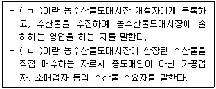
- ㄱ: 산지유통인, ㄴ: 매매참가인
- ㄱ: 산지유통인, ㄴ: 시장도매인
- ㄱ: 도매시장법인, ㄴ: 매매참가인
- ㄱ: 도매시장법인, ㄴ: 시장도매인
(정답률: 알수없음)
33. 수산물 산지위판장의 중도매인이 지불해야 하는 유통비용이 아닌 것은?
- 상차비
- 어상자대
- 위판수수료
- 저장ㆍ보관비
(정답률: 알수없음)
34. 활어 유통에 관한 설명으로 옳은 것을 모두 고른 것은?
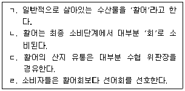
- ㄱ, ㄴ
- ㄱ, ㄹ
- ㄴ, ㄷ
- ㄷ, ㄹ
(정답률: 알수없음)
35. 양식산 넙치의 유통 특성에 관한 설명으로 옳지 않은 것은?
- 주요 산지는 제주도와 완도이다.
- 대부분 유사도매시장을 경유한다.
- 최대 수출대상국은 일본이며, 주로 활어로 수출된다.
- 해면양식어업 전체 품목 중 생산량이 가장 많다.
(정답률: 알수없음)
36. 선어 유통에 관한 설명으로 옳지 않은 것은?
- 선어란 저온보관을 통해 냉동하지 않은 수산물을 의미한다.
- 전체 수산물 유통량의 50% 이상이다.
- 우리나라 연근해에서 어획된 것이 대부분이다.
- 선도유지가 중요하며, 신속한 유통이 필요하다.
(정답률: 알수없음)
37. 냉동수산물 유통에 관한 설명으로 옳은 것을 모두 고른 것은?
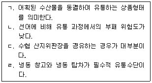
- ㄱ, ㄴ, ㄷ
- ㄱ, ㄴ, ㄹ
- ㄱ, ㄷ, ㄹ
- ㄴ, ㄷ, ㄹ
(정답률: 알수없음)
38. 수산가공품의 유통에 관한 설명으로 옳지 않은 것은?
- 부패를 억제하여 장기간의 저장이 가능하다.
- 가공정도가 높을수록 일반 수산물 유통과 유사하다.
- 수송이 편리하고, 공급조절이 가능하다.
- 위생적인 제품 생산으로 상품성을 높일 수 있다.
(정답률: 알수없음)
39. 수입 연어류 유통에 관한 설명으로 옳은 것은?
- 대부분 활수산물이다.
- 대부분 양식산이다.
- 대부분 러시아산이다.
- 대부분 유사도매시장을 경유한다.
(정답률: 알수없음)
40. 수산물 공동판매의 장점으로 옳은 것을 모두 고른 것은?
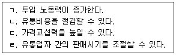
- ㄱ, ㄴ
- ㄱ, ㄹ
- ㄴ, ㄷ
- ㄷ, ㄹ
(정답률: 알수없음)
41. 수산물 소비지 도매시장의 기능으로 옳지 않은 것은?
- 양륙기능
- 수집기능
- 분산기능
- 가격형성기능
(정답률: 알수없음)
42. 수산물 전자상거래에 관한 설명으로 옳은 것은?
- 유통경로가 상대적으로 길다.
- 거래 시간과 공간의 제한이 없다.
- 구매자 정보를 획득하기 어렵다.
- 홍보 및 판촉비용이 증가한다.
(정답률: 알수없음)
43. 조기의 수요변화로 ( )에 들어갈 옳은 내용은?
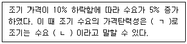
- ㄱ: 0.2, ㄴ: 탄력적
- ㄱ: 0.2, ㄴ: 비탄력적
- ㄱ: 0.5, ㄴ: 탄력적
- ㄱ: 0.5, ㄴ: 비탄력적
(정답률: 알수없음)
44. 수산물의 가격 변동폭을 증가시키는 원인으로 옳지 않은 것은?
- 계획생산의 어려움
- 어획물의 다양성
- 강한 부패성
- 정부 수매비축
(정답률: 알수없음)
45. 수입 대게의 각 유통단계별 가격(원/kg)을 나타낸 것이다. 도매상의 유통마진율(%)은? (단, 유통비용은 없다고 가정한다.)
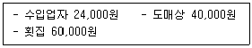
- 30
- 40
- 50
- 60
(정답률: 알수없음)
46. 수산물 할인 쿠폰이나 즉석 경품 등을 제공하는 판매촉진 활동의 장점에 관한 설명이 아닌 것은?
- 판매 홍보에 효과적이다.
- 잠재고객을 확보할 수 있다.
- 브랜드의 고급화에 도움이 된다.
- 소비자의 대량 구매 심리를 자극한다.
(정답률: 알수없음)
47. 수산물 상표에 관한 설명으로 옳은 것을 모두 고른 것은?
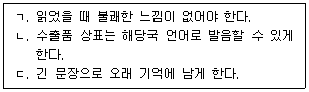
- ㄱ, ㄴ
- ㄱ, ㄷ
- ㄴ, ㄷ
- ㄱ, ㄴ, ㄷ
(정답률: 알수없음)
48. 해양수산부는 수산물 소비확대를 위해 “어식백세 캠페인”의 일환으로 수산물 소비촉진 사업자를 공모하였다. 해당사업 판촉활동에 관한 것을 모두 고른 것은?
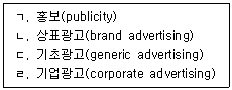
- ㄱ, ㄴ
- ㄱ, ㄷ
- ㄴ, ㄷ
- ㄴ, ㄹ
(정답률: 알수없음)
49. 수산물 정보를 체계적으로 수집하기 위한 것이 아닌 것은?
- 판매시점 정보시스템(POS System)
- 바코드(Bar Code)
- 공급망관리(SCM)
- 전자문서교환(EDI)
(정답률: 알수없음)
50. 수산물 가격 및 수급안정을 목적으로 시행하는 유통정책이 아닌 것은?
- 수산업관측사업
- 어업보험제도
- 정부비축사업
- 자조금제도
(정답률: 알수없음)
3과목: 수확후 품질관리론
51. 수분활성도를 조절하여 저장성을 개선시킨 수산식품이 아닌 것은?
- 마른오징어
- 간고등어
- 가쓰오부시
- 참치통조림
(정답률: 알수없음)
52. 어패류의 선도 판정법 중 화학적 방법이 아닌 것은?
- 휘발성 염기 질소 측정법
- 경도 측정법
- 트리메틸아민 측정법
- pH 측정법
(정답률: 알수없음)
53. 초기 세균 농도가 105 CFU/g인 연육을 120℃에서 3분간 살균하였더니 102 CFU/g으로 감소하였다. 이 때 D값은?
- 1분
- 2분
- 3분
- 5분
(정답률: 알수없음)
54. 수산식품 가공처리 중 지질산화 억제를 위한 방법으로 옳지 않은 것은?
- 냉동굴 제조 시 얼음막 처리
- 마른멸치 제조 시 BHT 처리
- 어육포 포장 시 탈산소제 봉입 처리
- 저염 오징어젓 제조 시 소브산 처리
(정답률: 알수없음)
55. 접촉식 동결법에 관한 설명으로 옳지 않은 것은?
- 냉각된 금속판 사이에 원료를 넣고, 양면을 밀착하여 동결하는 방법이다.
- 선상 동결법으로도 사용한다.
- 급속 동결법 중의 하나이다.
- 선망으로 어획된 참치통조림용 가다랑어의 동결에 적용하고 있다.
(정답률: 알수없음)
56. 연승(주낙)으로 어획한 갈치를 어상자에 담을 때 적절한 배열방법은?
- 복립형
- 산립형
- 환상형
- 평편형
(정답률: 알수없음)
57. 수산식품의 진공포장 처리에 관한 설명으로 옳지 않은 것은?
- 호기성 미생물의 발육이 억제된다.
- 내용물의 지질산화가 억제된다.
- 부피를 줄여 수송 및 보관이 용이하다.
- 포장재는 기체투과성이 있어야 한다.
(정답률: 알수없음)
58. 수산물 표준규격에서 정하는 포장재료 및 포장재료의 시험방법 중 PP대(직물제포대) 시험항목에 해당하지 않는 것은?
- 인장강도
- 직조밀도
- 봉합실 흡수량
- 섬도
(정답률: 알수없음)
59. 고등어의 동결저장 중 품온이 -10℃일 때 동결률(%)은? (단, 고등어의 수분함량은 75%이고, 어는점은 -2℃이다.)
- 75%
- 80%
- 85%
- 90%
(정답률: 알수없음)
60. 연제품의 탄력에 관한 설명으로 옳은 것은?
- 경골어류는 연골어류보다 겔 형성력이 좋다.
- 적색육 어류가 백색육 어류보다 겔 형성력이 좋다.
- 어육의 겔 형성력은 선도와 관계없다.
- 단백질의 안정성은 냉수성 어류가 온수성 어류보다 크다.
(정답률: 알수없음)
61. 어육의 동결 중 나타나는 최대 빙결정 생성대에 관한 설명으로 옳지 않은 것은?
- -5∼ 어는점(℃) 범위의 온도대이다.
- 얼음 결정이 가장 많이 생성된다.
- 어육의 품온이 떨어지는 시간이 많이 걸리는 구간이다.
- 냉동품의 품질은 최대 빙결정 생성대의 통과시간이 길수록 우수하다.
(정답률: 알수없음)
62. 한천에 관한 설명으로 옳은 것은?
- 한천은 아가로펙틴과 아가로스의 혼합물이며, 아가로펙틴이 주성분이다.
- 아가로펙틴은 중성다당류이다.
- 한천은 소화흡수가 잘되어 식품의 소재로 활용도가 높다.
- 냉수에는 잘 녹지 않으나, 80℃ 이상의 뜨거운 물에는 잘 녹는다.
(정답률: 알수없음)
63. 제품의 흑변 방지를 위하여 통조림 용기에 사용하는 내면 도료는?
- 비닐수지 도료
- 유성수지 도료
- V-에나멜 도료
- 에폭시수지 도료
(정답률: 알수없음)
64. 마른간법과 비교한 물간법의 특징으로 옳은 것을 모두 고른 것은?
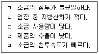
- ㄱ, ㄴ
- ㄴ, ㄷ
- ㄷ, ㄹ
- ㄹ, ㅁ
(정답률: 알수없음)
65. 국내에서 참치통조림의 원료로 가장 많이 사용되고 있는 어종은?
- 가다랑어
- 날개다랑어
- 참다랑어
- 황다랑어
(정답률: 알수없음)
66. 게맛어묵(맛살류)의 제품 형태에 해당하지 않는 것은?
- 청크(chunk)
- 플레이크(flake)
- 라운드(round)
- 스틱(stick)
(정답률: 알수없음)
67. 마른김의 제조를 위하여 산업계에서 주로 적용하고 있는 기계식 건조방법은?
- 냉풍건조
- 열풍건조
- 동결건조
- 천일건조
(정답률: 알수없음)
68. 다음 수산발효식품 중 제조기간이 가장 긴 제품은?
- 멸치젓
- 멸치액젓
- 명란젓
- 가자미식해
(정답률: 알수없음)
69. 수산물의 원료 전처리 기계에 해당하는 것을 모두 고른 것은?
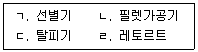
- ㄱ, ㄴ
- ㄱ, ㄴ, ㄷ
- ㄴ, ㄷ, ㄹ
- ㄱ, ㄴ, ㄷ, ㄹ
(정답률: 알수없음)
70. 어묵제조 공정에 필요한 기계장치를 순서대로 옳게 나열한 것은?
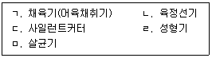
- ㄱ → ㄴ → ㄷ → ㄹ → ㅁ
- ㄱ → ㄷ → ㄴ → ㄹ → ㅁ
- ㄴ → ㄱ → ㄷ → ㄹ → ㅁ
- ㄴ → ㄱ → ㄷ → ㅁ → ㄹ
(정답률: 알수없음)
71. 다음과 같은 순서로 처리하는 건조기는?
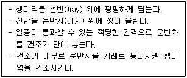
- 유동층식 건조기
- 캐비넷식 건조기
- 터널식 건조기
- 회전식 건조기
(정답률: 알수없음)
72. 조개류의 독성 물질이 아닌 것은?
- venerupin
- PSP
- DSP
- tetrodotoxin
(정답률: 알수없음)
73. HACCP의 CCP(중요관리점)로 결정되어지는 질문과 답변은?
- 확인된 위해요소를 관리하기 위한 선행요건프로그램이 있으며 잘 관리되고 있는가? - Yes
- 이후의 공정에서 확인된 위해를 제거하거나 발생가능성을 허용수준까지 감소시킬 수 있는가? - Yes
- 이 공정이나 이후의 공정에서 확인된 위해의 관리를 위한 예방조치방법이 없으며, 이 공정에서 안전성을 위한 관리가 필요한가? - No
- 이 공정은 이 위해의 발생가능성을 제거 또는 허용수준까지 감소시키는가? - Yes
(정답률: 알수없음)
74. 식품공전상 수산물의 중금속 기준으로 옳은 것은?
- 납(오징어를 제외한 연체류): 2.0 mg/kg 이하
- 카드뮴(오징어): 2.0 mg/kg 이하
- 메틸수은(다랑어류): 2.0 mg/kg 이하
- 카드뮴(미역): 0.5 mg/kg 이하
(정답률: 알수없음)
75. HACCP의 제품설명서 작성 시 포함되지 않는 항목은?
- 완제품규격
- 제품유형
- 식품제조 현장작업자
- 유통기한
(정답률: 알수없음)
4과목: 수산일반
76. 수산업ㆍ어촌 발전 기본법상 소금생산업이 해당하는 수산업의 종류는?
- 양식업
- 어업
- 수산물 가공업
- 수산물 유통업
(정답률: 알수없음)
77. 수산업ㆍ어촌의 공익적 기능을 모두 고른 것은?
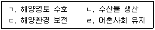
- ㄱ, ㄴ, ㄷ
- ㄱ, ㄴ, ㄹ
- ㄱ, ㄷ, ㄹ
- ㄴ, ㄷ, ㄹ
(정답률: 알수없음)
78. 다음 중 3년간(2017 ∼ 2019년) 우리나라 수산물 수급에 관한 설명으로 옳은 것은?
- 수입량이 수출량보다 많다.
- 수요량(국내소비+ 수출)보다 국내 생산량이 많다.
- 국민 1인당 소비량이 대폭 감소하고 있다.
- 수산물 자급율이 높아지고 있다.
(정답률: 알수없음)
79. 수산물에 관한 설명으로 옳지 않은 것은?
- 수산물은 건강기능 성분을 대부분 포함하고 있다.
- 수산물은 부패하기 쉽다.
- 우리나라 어선어업 생산량은 계속 증가하고 있다.
- 수산물은 단백질 공급원이다.
(정답률: 알수없음)
80. 수산관계법령상 수산자원관리 수단이 아닌 것은?
- 그물코 규격 제한
- 항해 안전 장비 제한
- 포획ㆍ채취 금지 체장
- 포획ㆍ채취 금지 기간
(정답률: 알수없음)
81. 우리나라 수산업에 관한 설명으로 옳지 않은 것은?
- 우리나라 경제개발에 기여하였다.
- 한ㆍ중ㆍ일 어업협정으로 어장이 축소되었다.
- 최근 양식산업에 IT 등 첨단기술이 융합되고 있다.
- 수산업 인구가 점점 늘어날 전망이다.
(정답률: 알수없음)
82. 다음 ( )에 들어갈 단어를 순서대로 옳게 나열한 것은?
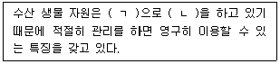
- ㄱ: 타율적, ㄴ: 재생산
- ㄱ: 타율적, ㄴ: 일회성생산
- ㄱ: 자율적, ㄴ: 재생산
- ㄱ: 자율적, ㄴ: 일회성생산
(정답률: 알수없음)
83. 다음에서 설명하고 있는 수산생물의 종류는?
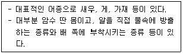
- 연체류
- 해조류
- 어류
- 갑각류
(정답률: 알수없음)
84. 다음에서 설명하는 것은?
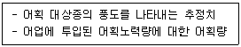
- 단위 노력당 어획량(CPUE)
- 최대 지속적 생산량(MSY)
- 최대 경제적 생산량(MEY)
- 생물학적 허용 어획량(ABC)
(정답률: 알수없음)
85. 우리나라의 해역별 주요 어종 및 어업 종류가 옳게 연결된 것은?
- 서해 - 도루묵 – 채낚기어업
- 남해 - 멸치 – 죽방렴어업
- 동해 - 낙지 – 쌍끌이저인망어업
- 서남해 - 대게 - 잠수기어업
(정답률: 알수없음)
86. 얕은 수심과 빠른 조류를 이용하는 안강망 어업과 꽃게 자망 어업 등이 주로 행해지고 있는 해역은?
- 동해
- 남해
- 서해
- 제주
(정답률: 알수없음)
87. 초음파가 가지는 직진성, 등속성, 반사성 등을 이용하여 어군의 존재와 위치 등을 탐색하는 기기는?
- 양망기
- 어구 조작용 기계 장치
- 어구 관측 장치
- 어군 탐지기
(정답률: 알수없음)
88. 우리나라 동해안 수심 800 ~ 2,000 m에서 대형 통발 어구로 어획하는 어종은?
- 대하
- 꽃게
- 붉은 대게
- 오징어
(정답률: 알수없음)
89. 수산자원관리에서 어획노력량 규제에 해당되지 않는 것은?
- 어구 제한
- 어선의 크기 제한
- 출어 횟수 제한
- 어획량 제한
(정답률: 알수없음)
90. 양식생물과 양식방법의 연결이 옳지 않은 것은?
- 굴 – 수하식
- 멍게 – 흘림발식
- 바지락 – 바닥식
- 조피볼락 - 가두리식
(정답률: 알수없음)
91. 알과 정액을 인공적으로 수정시켜 종자를 생산하는 양식 어류가 아닌 것은?
- 조피볼락
- 감성돔
- 넙치
- 무지개송어
(정답률: 알수없음)
92. 폐쇄식 양식장에서 인위적으로 온도를 조절하기 위한 장치를 모두 고른 것은?
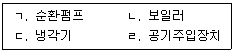
- ㄱ, ㄴ
- ㄱ, ㄹ
- ㄴ, ㄷ
- ㄷ, ㄹ
(정답률: 알수없음)
93. 양식 사료 비용이 가장 적게 들어가는 양식장은?
- 사료계수 1.5를 유지하는 양식장
- 사료효율 55 %를 유지하는 양식장
- 사료계수 2.0을 유지하는 양식장
- 사료효율 60 %를 유지하는 양식장
(정답률: 알수없음)
94. 양식생물의 질병 중 병원체 감염이 아닌 것은?
- 넙치 백점병
- 잉어 등여윔병
- 조피볼락 연쇄구균증
- 참돔 이리도 바이러스
(정답률: 알수없음)
95. 다음에서 설명하는 양식 어류의 먹이생물은?
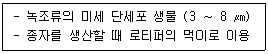
- 니트로소모나스(Nitrosomonas)
- 코페포다(Copepoda)
- 클로렐라(Chlorella)
- 알테미아(Artemia)
(정답률: 알수없음)
96. 양식 활어를 수송할 때 주의할 점이 아닌 것은?
- 산소의 공급
- 오물의 제거
- 적당한 습도 유지
- 적정 수온보다 높게 유지
(정답률: 알수없음)
97. 우리나라 동해안 영일만 이북에서 생산되는 냉수성 양식 패류는?
- 참굴
- 피조개
- 바지락
- 참가리비
(정답률: 알수없음)
98. 유엔 식량농업기구의 IUU(불법ㆍ비보고ㆍ비규제)어업 국제 행동계획에 관한 설명으로 옳지 않은 것은?
- 모든 국가는 의무적으로 따라야 한다.
- 불법어업 근절을 위한 국제기구 활동이다.
- IUU어업에 대한 시민사회 관심이 늘어나고 있다.
- 지속가능한 어업을 위해 필요한 조치이다.
(정답률: 알수없음)
99. 총허용어획량(TAC) 제도에 관한 설명으로 옳은 것은?
- 양식수산물 생산량 조절에 활용되고 있다.
- 어종별로 연간 어획량을 제한한다.
- 수산자원의 자연사망을 관리한다.
- 우리나라 전통적인 수산자원관리 제도이다.
(정답률: 알수없음)
100. 수산업법상 어업 관리제도가 아닌 것은?
- 자유어업
- 면허어업
- 신고어업
- 허가어업
(정답률: 알수없음)